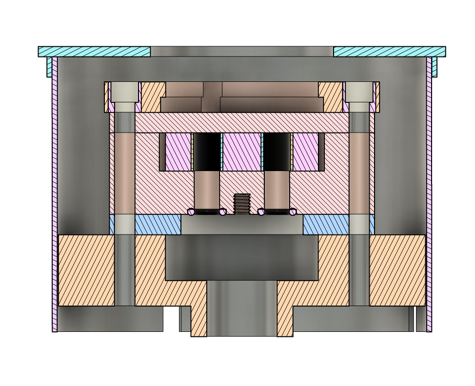
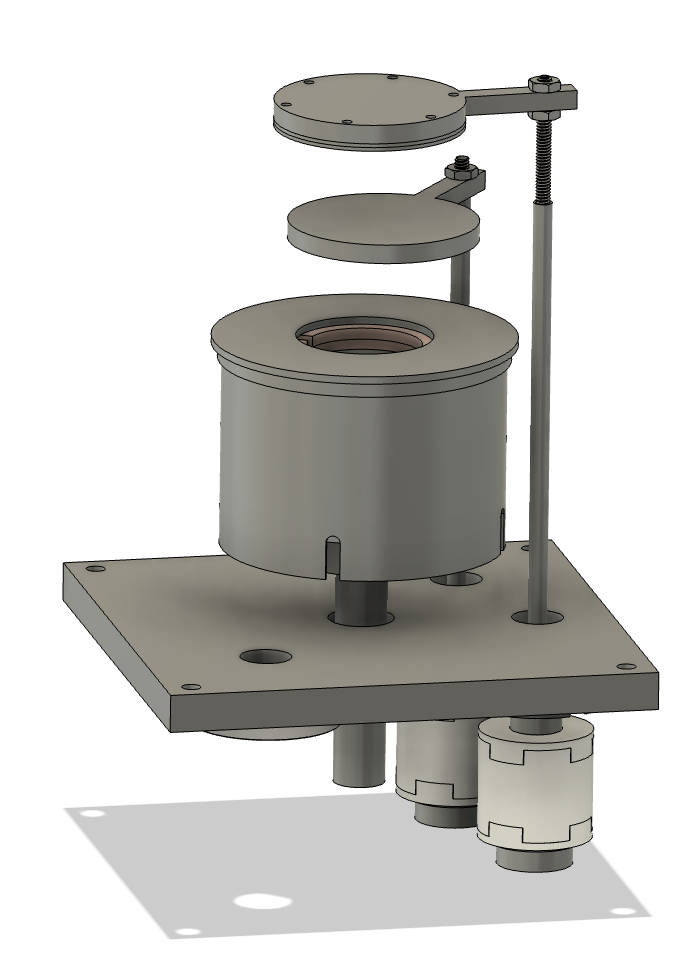
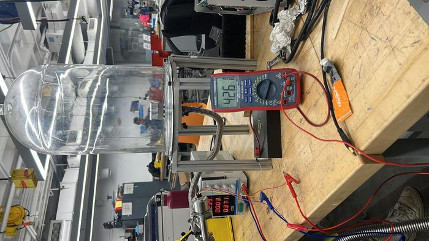
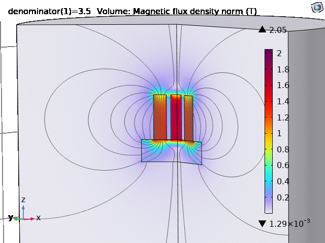

DC Magnetron Sputterer
Thin-film deposition hardware for open-source hacker fabs.

As part of an initiative to empower materials engineering through accessible tools, I traveled to MIT as part of a team helping to establish the MIT hacker fab.
There, I assisted in establishing several pieces of critical infrastructure, including a maskless lithography machine, a spin coater, and a DC magnetron sputterer for thin-film physical vapor deposition.
Sputtering requires stripping argon atoms of their electrons to create a plasma, which then bombards a metal target to eject atoms onto a substrate. To make this efficient at lower pressures, we utilized a magnetron configuration.
By arranging strong permanent magnets behind the deposition target, the magnetic field traps free electrons in a localized path near the target surface. This dramatically increases the probability of ionizing the argon gas, yielding a dense, highly localized plasma ring.

Cathode & Magnet Layout
Sputterer Assembly
Vacuum IntegrationTo evaluate and optimize the magnetron's performance prior to testing, finite element magnetic simulations and particle tracing models were implemented.
By analyzing the magnetic field topologies, we were able to predict electron trapping efficiency and tune the target erosion profiles for improved deposition uniformity.

Magnetic Field AnalysisThe ultimate goal of this system is to lay down nanometer-thick films of metals (like copper or aluminum) onto silicon wafers, serving as the conductive layers for DIY semiconductor devices.
Building this required integrating a high-vacuum pumping system (typically a roughing pump paired with a turbomolecular pump), a regulated mass flow controller for the argon gas, and a high-voltage DC power supply capable of sustaining the plasma discharge safely.